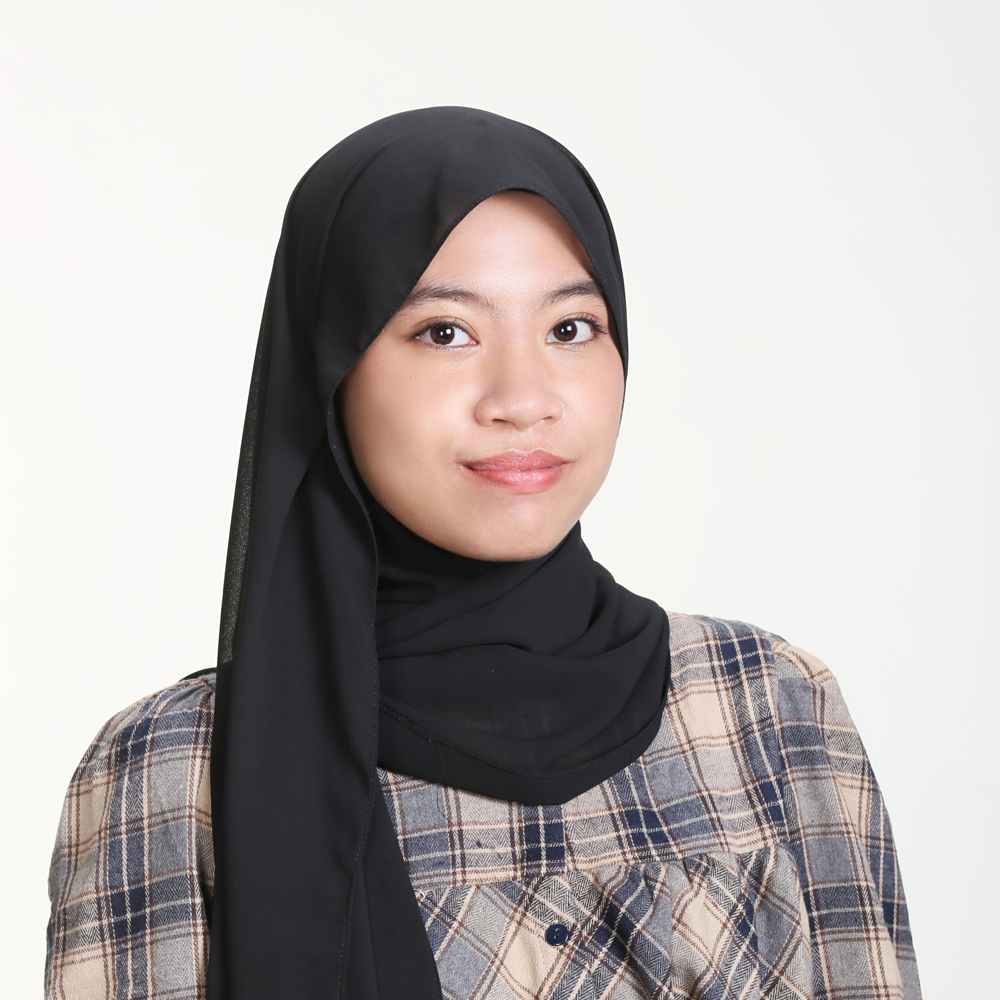

Je m’appelle Nadira
Étudiante en deuxième année de BUT Science des Données à l’IUT Grand Ouest Normandie, je m’intéresse à l’analyse statistique, à la visualisation et à la valorisation des données.
Je souhaite aujourd’hui développer mes compétences en Data Analysis, Business Intelligence et automatisation, tout en mettant mes connaissances en pratique à travers une première expérience professionnelle.
Formation
- Depuis 2025
- BUT 2 Science des Données – Parcours exploration et modélisation statistique,
IUT Grand Ouest Normandie (14) - 2022 - 2025
- Baccalauréat général – Filière de sciences naturelles,
Lycée Kusuma Bangsa (Indonésie)
Compétences
- Analyse Statistique
- Analyse descriptive, inférentielle et modélisation
(RStudio : dplyr, tidyr, ggplot2 ; SAS) - Programmation informatique
- Python (Pandas, Numpy), SQL (MySQL), HTML, CSS, JavaScript
- Business Intelligence
- Power BI (DAX), Power Query, Excel
- Documentation et Présentation
- Canva, Marp, LaTeX, PowerPoint, Word
Carnet de commandes Superstore
Analyse exploratoire du carnet de commande d’une entreprise de vente par correspondance.
Voir le projet →L’alimentation et la santé des lycéens
Analyse des habitudes alimentaires des lycéens et de leur influence sur la santé à partir de données collectées par questionnaire.
Voir le projet →L'estimation par sondage
Étude de l’estimation par sondage et du bootstrap à travers des simulations statistiques sous R.
Voir le projet →Analyse du trafic aérien à New York
Analyse des retards et des annulations de vols dans les principaux aéroports de New York en 2023 à partir d’indicateurs statistiques et de visualisations.
Voir le projet →